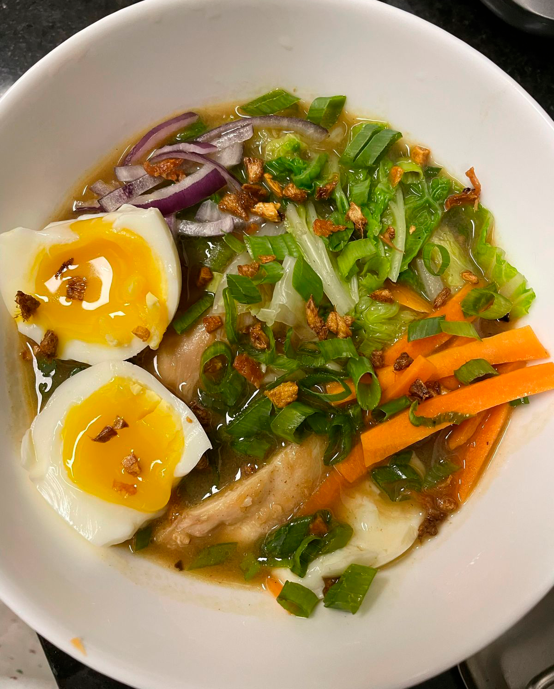
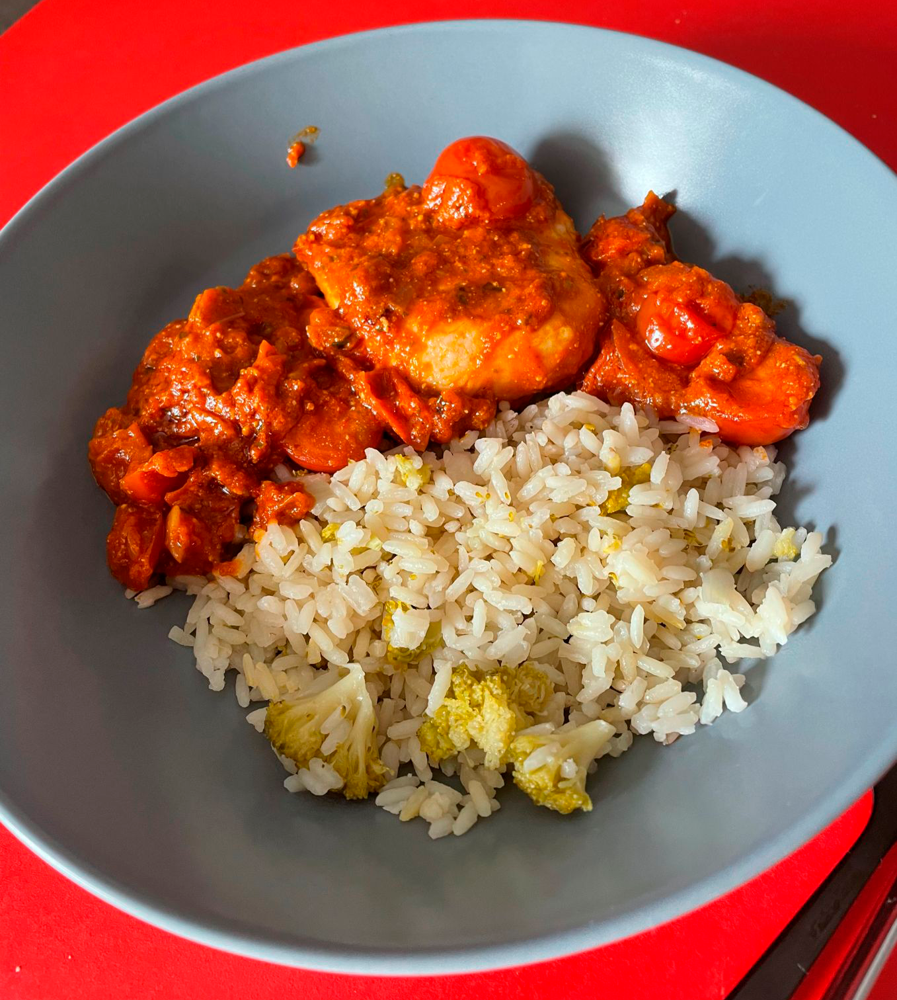
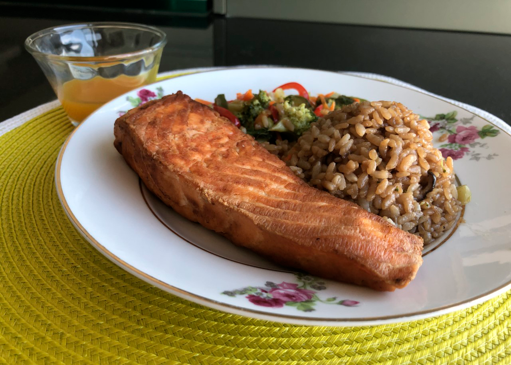

Bistro da Soeur
| 
Ramen - Ramen com caldo de missô, frango, ovo cozido e legumes.R$ 50.00 |
| 
Pescada ao Pomodoro - Filé alto de pescada com molho de tomates confitados e manjericão, acompanhado de arroz de brócolis.R$ 40.00 |

Rigatoni com Almôndegas - Rigatoni com molho de tomate e almôndegas caseiras.R$ 40.00 |
| 
Salmão Favorito - Filé de salmão grelhado ao molho de molho de mostarda e mel, acompanhado de legumes no vapor e arroz de shiitake.R$ 50.00 |